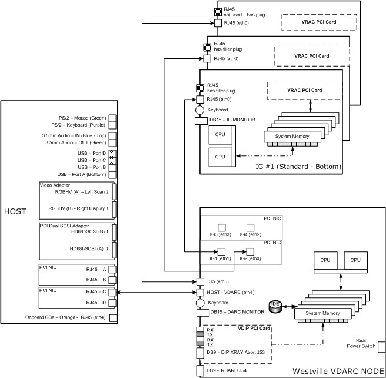
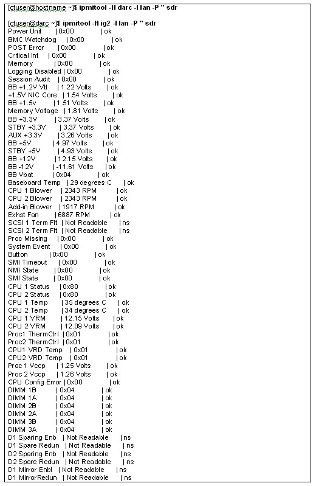
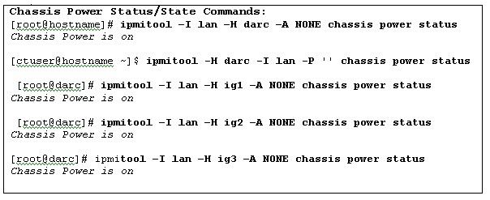

Operating Documentation
Direction 5193575-800, Rev# 5
LightSpeed 7.X Service Information - Adv
Operating Documentation |
| Last revised: | 21 March 2008 |
This module describes how to verify communication between the VIG Node and the VDARC Node..After verifying that communication exists between the IG Node and the VDARC Node, VRAC diagnostics for each VIG Node may be performed. Memory size is important and may checked; however, exact memory values expected are not discussed as this memory size value may change over time and with different types of VIG Nodes offered. It is currently (July, 2006) around 6 GBytes for Main memory. Application software can be started to verify that Image Generation is running, which assists in determining if the VIG Node(s) is up (as we determine up and ready for recon). Refer to the Ethernet Diagrams to understand connections between Nodes. Refer to the command list to determine which commands can be performed.
All VIG Nodes must be power cycled with the VDARC Node running and booted up (rsh is successful on VDARC). The vrac_flash_update command is performed with Apps down from the Host. If this fails, rsh to the VDARC and run the vrac_flash_update ig# command (where # is specific to the VIG Node) for each VIG Node configured.
The following Illustrations show the Ethernet connections between the various Nodes–Host, VDARC, and VIG. Two versions are provided and are specifically referenced to the particular VDARC Node version (Westville or Jarrell). The Westville VDARC Node rear panel has 6 Ethernet ports available for connection between the Host (1 port) and the VIG Nodes (5 ports). The Jarrell VDARC Node rear panel has 4 Ethernet ports available for connection between the Host (1 port) and the VIG Nodes (3 ports). The VDARC Node Ethernet address associated with the Host or each VIG Node is not the same, specifically because the number of ports available for each VDARC Node version is different.
Illustration 1: Illustration 1: Westville VDARC Node Interconnect Diagram

Illustration 2: Illustration 2: Jarrell VDARC Node Interconnect Diagram

Table 1: VIG Node Command List
| [root@darc] ifconfig | Allows the user to determine what the VDARC Node understands in relation to the Ethernet Address / port for a specific VIG Node (VIG Node1, VIG Node2 and VIG Node3). When a VIG Node is configured /active in the system, look for Running. | |
[root@darc] ipmitool -I lan -H ig# -A NONE chassis power status | The ipmitool may be available. This command allows the user to determine what the VDARC Node understands in relation to the power state for a specific VIG Node (for ig# insert 1, 2 or 3 as applicable). The telnet command or the service igpower# start command will allow the user to apply power to the VIG Node from a Unix Shell. | |
| [root@darc] service igpower# start | Allows the user to turn on power to a specific VIG Node power (for ig# insert 1, 2 or 3 as applicable). Power cord must be inserted and AC Power must be good, Ethernet cable must be routed between VDARC and VIG Node correctly and must be good. | |
| [root@darc] service igpower# stop | Allows the user to turn off power to a specific VIG Node power (for ig# insert 1, 2 or 3 as applicable). Power cord must be inserted and AC Power must be good, Ethernet cable must be routed between VDARC and VIG Node correctly and must be good. | |
| [root@hostname] ethtool –p eth# [root@darc] ethtool –p eth# [root@ig#] ethtool –p eth# | The ethtool command allows the user to visually verify that the NIC is working. After the command is entered, the user will visually verify that one LED at the NIC is blinking much faster. To stop the process, press <Ctrl-C>. This can be performed on the host, VDARC, or VIG Node. Replace the number symbol # with the Ethernet port (eth1 is ig1 on the darc). | |
| [root@darc] service cliservice start | Restarts or verifies that the cliservice dpcproxy server is running on the Host to allow for Serial Over LAN (SOL). Returning message will be either: The dpcproxy is running, or dpcproxy cliservice has been restarted. Hint: Try reloading the SOL CD into the DARC Node and then pressing Reset or cycling power, as needed, with Apps down. | |
telnet localhost 623 Server: ig1 (or ig2 or ig3) Username: <Enter> Password: <Enter> Login successful dpccli> exit | After rsh to darc, this verifies dpcproxy server running / SOL connection for a specific VIG Node. If the “dpccli>” prompt fails to appear, reload the latest applicable version of the SOL CD.Instructions for the load: Insert the SOL CD into the VDARC Node. Reset or repower the VDARC Node. The SOL CD will flash in approximately 1-3 minutes and should auto-eject. Remove the SOL CD. Reboot the Operator Console if necessary. | |
| ping ig# | Performed from the VDARC Node for ig1, ig2, or ig3. Press <Ctrl-C> to stop the ping process. OS and Apps software must be loaded on the VDARC Node. | |
| rsh ig# | Performed from the VDARC Node for ig1, ig2, or ig3. OS and Apps software must be loaded on the VDARC Node. | |
| cd /var/log more messages | A status log on the VIG Node can assist in determining issues (used in conjunction with the log on the VDARC Node). See Section 10.2, “VDARC Log File Discussion.” | |
| lhinv | Lists devices and memory. | |
| lhinv | grep Main | Lists memory size. | |
telnet localhost 623 Server: ig1 (or ig2 or ig3) Username: <Enter> Password: <Enter> Login successful dpccli> help | Check the help menu for additional assistance with switches. | |
telnet localhost 623 Server: ig1 (or ig2 or ig3) Username: <Enter> Password: <Enter> Login successful dpccli> reset OK dpccli> console | After rsh to darc, this verifies dpcproxy server running / SOL connection. Resets the VIG Node. | |
telnet localhost 623 Server: ig1 (or ig2 or ig3) Username: <Enter> Password: <Enter> Login successful dpccli> console | After rsh to darc, this verifies dpcproxy server running / SOL connection. Lists the VIG Node information and current OS and kernel information. | |
| {ctuser@hostname} vrac_flash_update | Performed with application sw down from the Host. Updates the configured VIG Node vrac board(s). | |
| {ctuser@darc} vrac_flash_update ig# | Performed with application sw down from the DARC. Updates the configured VIG Node vrac board(s) from a specified VIG Node. | |
| cat /proc/driver/gemsvrac | Shows status and existence of a specific VIG Node vrac. | |
| [root@darc] rsh ig# [root@ig#] lspci -n -d 17b6: | grep 17b6 [root@ig#] lspci -nd 17b6: | Checks the existence of a VRAC in a specific VIG Node. Some sites may find this command not useful. A better command is: lsmod | grep vrac. | |
| [root@ig1 ~]# lsmod | grep vrac | Checks the existence of a VRAC in a specific VIG Node. | |
| lsmod | grep vrac | Query for the vrac module (VIG Node only). | |
| [root@darc] rsh ig# | Three passes (-r) of all (-a) cone beam vrac diagnostics performed on a specific VIG Node. Later sw versions (06MW03.x and greater) may run vrac_menu –a for ts and cb. | |
| [root@ig#] vrac_menu -cb -a -r 3 | ||
| [root@darc] rsh ig# | Three passes (-r) of all (-a) thin slice vrac diagnostics performed on a specific VIG Node. Later sw versions (06MW03.x and greater) may run vrac_menu –a for ts and cb. | |
| [root@ig#] vrac_menu -ts -a -r 3 | ||
| [root@ig#] vrac_menu -a | Performs 1 pass of thin slice and cone beam diagnostics. The –r may be added to perform more passes. | |
| uname -a | Displays kernel name, hostname, kernel release and version, machine hardware name, and hardware platform. | |
| free -m | Does not adequately display VIG Node total memory information, but does display used memory. | |
| cat /proc/meminfo | Displays detailed memory information. | |
| df –h | Displays partition information. | |
| cat /proc/devices | Lists all devices detected by the system. | |
| [root@ig#] dmidecode | less | Shows the VIG Node version of Motherboard. | |
| [root@ig#] dmidecode |
grep –i version or [root@ig#] dmidecode | grep Ver | Shows VIG Node BIOS version as loaded by the vendor. | |
[root@ig#] ps –leaf | grep –v grep | grep image_generation | With APPS Up ONLY, provides a clue that recon is up and running on the specific VIG Node. Do not perform this command on the VDARC Node – it is not updated properly there. | |
| {ctuser@darc} ipmitool -I lan -H ig1 -P '' sel | Basic comm. over SOL, and log status. | |
| {ctuser@darc} ipmitool -H ig1 -P '' chassis power status | Check chassis power behavior at boot. | |
| {ctuser@darc} ipmitool -H ig1 -P '' fru | Lists board components. | |
| {ctuser@darc} ipmitool -H ig1 -P '' sdr type temp | Component temperature checks. | |
| {ctuser@darc} ipmitool -H ig1 -P '' sel list last 15 | Lists all board sensors. Many details. Look for OKs. | |
| {ctuser@host} ipmitool -H darc -P '' sdr | Simplified board sensors. Look for OKs. This has replaced sensors –v. | |
| [root@ig#] dmidecode|grep -i vers | Returns a Version string which contains WV for Westville, JR for Jarrell. |
The ipmitool should be available (without the need to activate it manually) on all CT / PET systems. The ipmitool command allows the user to look at the DARC Node using the Ethernet Cable from the Host to the DARC Node, but does not utilize the NIC. The ipmitool command requirements are that the:
AC Line-in Power Cord must be connected and good.
Rear-panel DARC Node power switch must be turned on.
Ethernet Cable between the Host and DARC Node must be good and properly connected in the correct ports.
To turn on the ipmitool:
[root@hostname]# cd /usr/g/DARC_RPM [root@hostname]# ls
ipmitool-1.8.2-1.rhel3.i386.rpm
| NOTE: | Type the following command up to and including replacesfiles and the <spacebar>. Then copy and paste the latest version of the ipmitool version command, as shown. The ipmitool version command contains the number one and the lower case letter L which can be easy misread. |
[root@hostname]# rpm -i -U --nodeps --hash --replacefiles ipmitool-1.8.2-1.rhel3.i386.rpm
| NOTE: | Then ipmitool will display output that it has installed, or it may already have been installed and will display an output. |
########################################### [100%]
package ipmitool-1.8.2-1.rhel3 is already installed
The following example ( Illustration 3) shows the current sensor state (in/out of spec) of the host described by the "-H" option. The sensors –v command has been replaced due to garbled output in 07MWxx.x software.
Illustration 3: Current Sensor State of the Host Described by the "-H" Option

The following example ( Illustration 4) shows the current chassis power status or state of the host described by the "-H" option with 07MWxx.x software.
Illustration 4: Current Chassis Power Status or State of the Host Described by the "-H" Option

[root@hostname]# rsh darc Last login: Mon Aug 6 19:35:00 from oc You have new mail. [root@darc ~]# ipmitool -I lan -H ig1 -A NONE chassis power status Chassis Power is on [root@darc ~]# ipmitool -I lan -H ig1 -A NONE chassis power status Chassis Power is off [root@darc ~]# service igpower1 start Starting ig1: [ OK ] To remove power to the chassis, perform the following command: [root@darc ~]# service igpower1 stop Stopping ig1: [ OK ]
The following example ( Illustration 5) shows the current System Event Log (lots of noise!) of the host described by the "-H" option with 07MWxx.x software and the command to select a record ID.
Illustration 5: Current System Event Log of the Host Described by the "-H" Option

Open a Unix Shell on the Host Computer and perform any of the following sections.
This subsection will confirm the VDARC Node (Westville type) address at eth4 and the DARC Node Subnet address. Specific sites may require changing the DARC Subnet to a 169 base address due to a Hospital Backbone conflict with the 172.16.0.x base address. This 172 base address is the default. It is loaded onto the Host and VDARC Node during the Load From Cold software installation process unless the DARC Subnet box is selected and the alternate address supplied is inserted.
| NOTE: | Remember to resave the System State Reconfig Info File
whenever the DARC Subnet address is modified. DEFAULT DARC Subnet address: inet addr: 172 16.0.2 Bcast: 172.16.0.255 Mast: 255.255.255.0 ALTERNATE DARC Subnet address: inet addr: 169.254.0.2 Bcast: 169.254.0.255 Mast: 255.255.255.0 |
{ctuser@hostname} su -
Password: <password>
[root@hostname]# rsh darc
Last login: Mon Aug 6 19:35:00 from oc
You have new mail.
[root@darc ~]# ifconfig
| NOTE: | The eth4 inet addr and Bcast may be different for specific sites that have experienced a 172.16.0.x HOSPITAL Backbone conflict. These specific sites will have a specific 169.254.0.2 address. |
eth0 Link encap:Ethernet HWaddr 00:04:23:AC:76:80
IG2 inet addr:10.0.2.1 Bcast:10.0.2.255 Mask:255.255.255.0
inet6 addr: fe80::204:23ff:feac:7680/64 Scope:Link
UP BROADCAST MULTICAST MTU:1500 Metric:1
RX packets:0 errors:0 dropped:0 overruns:0 frame:0
TX packets:0 errors:0 dropped:0 overruns:0 carrier:0
collisions:0 txqueuelen:1000
RX bytes:0 (0.0 b) TX bytes:0 (0.0 b)
Base address:0x38c0 Memory:fe760000-fe780000
eth1 Link encap:Ethernet HWaddr 00:04:23:AC:76:81
IG1 inet addr:10.0.1.1 Bcast:10.0.1.255 Mask:255.255.255.0
inet6 addr: fe80::204:23ff:feac:7681/64 Scope:Link
UP BROADCAST MULTICAST MTU:1500 Metric:1
RX packets:0 errors:0 dropped:0 overruns:0 frame:0
TX packets:0 errors:0 dropped:0 overruns:0 carrier:0
collisions:0 txqueuelen:1000
RX bytes:0 (0.0 b) TX bytes:0 (0.0 b)
Base address:0x3880 Memory:fe880000-fe8a0000
eth2 Link encap:Ethernet HWaddr 00:04:23:AC:76:88
IG4 inet addr:10.0.4.1 Bcast:10.0.4.255 Mask:255.255.255.0
inet6 addr: fe80::204:23ff:feac:7688/64 Scope:Link
UP BROADCAST MULTICAST MTU:1500 Metric:1
RX packets:0 errors:0 dropped:0 overruns:0 frame:0
TX packets:0 errors:0 dropped:0 overruns:0 carrier:0
collisions:0 txqueuelen:1000
RX bytes:0 (0.0 b) TX bytes:0 (0.0 b)
Base address:0x3840 Memory:fe8a0000-fe8c0000
eth3 Link encap:Ethernet HWaddr 00:04:23:AC:76:89
IG3 inet addr:10.0.3.1 Bcast:10.0.3.255 Mask:255.255.255.0
inet6 addr: fe80::204:23ff:feac:7689/64 Scope:Link
UP BROADCAST MULTICAST MTU:1500 Metric:1
RX packets:0 errors:0 dropped:0 overruns:0 frame:0
TX packets:0 errors:0 dropped:0 overruns:0 carrier:0
collisions:0 txqueuelen:1000
RX bytes:0 (0.0 b) TX bytes:0 (0.0 b)
Base address:0x3800 Memory:fe9c0000-fe9e0000
Westville VDARC Node Type
eth4 Link encap:Ethernet HWaddr 00:0E:0C:5C:86:FE
VDARC inet addr:172.16.0.2 Bcast:172.16.0.255 Mask:255.255.255.0
inet6 addr: fe80::20e:cff:fe5c:86fe/64 Scope:Link
UP BROADCAST RUNNING MULTICAST MTU:1500 Metric:1
RX packets:4170 errors:0 dropped:0 overruns:0 frame:0
TX packets:45855 errors:0 dropped:0 overruns:0 carrier:0
collisions:0 txqueuelen:1000
RX bytes:316927 (309.4 Kb) TX bytes:3058715 (2.9 Mb)
Base address:0x2040 Memory:fe1a0000-fe1c0000
eth5 Link encap:Ethernet HWaddr 00:0E:0C:5C:86:FF
IG5 inet addr:10.0.5.1 Bcast:10.0.5.255 Mask:255.255.255.0
inet6 addr: fe80::20e:cff:fe5c:86ff/64 Scope:Link
UP BROADCAST MULTICAST MTU:1500 Metric:1
RX packets:0 errors:0 dropped:0 overruns:0 frame:0
TX packets:0 errors:0 dropped:0 overruns:0 carrier:0
collisions:0 txqueuelen:1000
RX bytes:0 (0.0 b) TX bytes:0 (0.0 b)
Base address:0x2000 Memory:fe1c0000-fe1e0000
lo Link encap:Local Loopback
inet addr:127.0.0.1 Mask:255.0.0.0
inet6 addr: ::1/128 Scope:Host
UP LOOPBACK RUNNING MTU:16436 Metric:1
RX packets:403 errors:0 dropped:0 overruns:0 frame:0
TX packets:403 errors:0 dropped:0 overruns:0 carrier:0
collisions:0 txqueuelen:0
RX bytes:24464 (23.8 Kb) TX bytes:24464 (23.8 Kb)
[root@darc ~]# exit
[root@hostname]#
{ctuser@hostname} su -
Password: <password>
[root@hostname]# rsh darc
Last login: Mon Aug 6 19:35:00 from oc
You have new mail.
[root@darc ~]# ifconfig
| NOTE: | The eth2 inet addr and Bcast may be different for specific sites that have experienced a 172.16.0.x HOSPITAL Backbone conflict. These specific sites will have a specific 169.254.0.2 address. |
eth0 Link encap:Ethernet HWaddr 00:04:23:CA:7E:B8
IG2 inet addr:10.0.2.1 Bcast:10.0.2.255 Mask:255.255.255.0
inet6 addr: fe80::204:23ff:feca:7eb8/64 Scope:Link
UP BROADCAST RUNNING MULTICAST MTU:1500 Metric:1
RX packets:166057 errors:0 dropped:0 overruns:0 frame:0
TX packets:146124 errors:0 dropped:0 overruns:0 carrier:0
collisions:0 txqueuelen:1000
RX bytes:32397595 (30.8 Mb) TX bytes:91184965 (86.9 Mb)
Base address:0xc400 Memory:cfe80000-cfea0000
eth1 Link encap:Ethernet HWaddr 00:04:23:CA:7E:B9
IG1 inet addr:10.0.1.1 Bcast:10.0.1.255 Mask:255.255.255.0
inet6 addr: fe80::204:23ff:feca:7eb9/64 Scope:Link
UP BROADCAST RUNNING MULTICAST MTU:1500 Metric:1
RX packets:164105 errors:0 dropped:0 overruns:0 frame:0
TX packets:141147 errors:0 dropped:0 overruns:0 carrier:0
collisions:0 txqueuelen:1000
RX bytes:31762737 (30.2 Mb) TX bytes:84167297 (80.2 Mb)
Base address:0xc480 Memory:cfea0000-cfec0000
Jarrell VDARC Node Type
eth2 Link encap:Ethernet HWaddr 00:04:23:BB:DB:EC
VDARC inet addr:172.16.0.2 Bcast:172.16.0.255 Mask:255.255.255.0
inet6 addr: fe80::204:23ff:febb:dbec/64 Scope:Link
UP BROADCAST RUNNING MULTICAST MTU:1500 Metric:1
RX packets:89484 errors:0 dropped:0 overruns:0 frame:0
TX packets:121201 errors:0 dropped:0 overruns:0 carrier:0
collisions:0 txqueuelen:1000
RX bytes:15385255 (14.6 Mb) TX bytes:13943296 (13.2 Mb)
Base address:0xdc00 Memory:cffa0000-cffc0000
eth3 Link encap:Ethernet HWaddr 00:04:23:BB:DB:ED
IG3 inet addr:10.0.3.1 Bcast:10.0.3.255 Mask:255.255.255.0
inet6 addr: fe80::204:23ff:febb:dbed/64 Scope:Link
UP BROADCAST RUNNING MULTICAST MTU:1500 Metric:1
RX packets:152621 errors:0 dropped:0 overruns:0 frame:0
TX packets:118265 errors:0 dropped:0 overruns:0 carrier:0
collisions:0 txqueuelen:1000
RX bytes:28314323 (27.0 Mb) TX bytes:55007399 (52.4 Mb)
Base address:0xdc80 Memory:cffe0000-d0000000
lo Link encap:Local Loopback
inet addr:127.0.0.1 Mask:255.0.0.0
inet6 addr: ::1/128 Scope:Host
UP LOOPBACK RUNNING MTU:16436 Metric:1
RX packets:101274 errors:0 dropped:0 overruns:0 frame:0
TX packets:101274 errors:0 dropped:0 overruns:0 carrier:0
collisions:0 txqueuelen:0
RX bytes:5267464 (5.0 Mb) TX bytes:5267464 (5.0 Mb)
This subsection will verify the VIG Node can be communicated too or pinged via the VDARC Node. After verifying the ping communication line exists between the specific VIG Node and the VDARC Node a remote shell will be invoked to determine if the specific VIG Node is up. This can be performed as ctuser or as root (not insight).
Open a Unix Shell and type the following:
{ctuser@hostname} su -
Password: <password>
[root@hostname]# rsh darc
Last login: Mon Aug 6 19:35:00 from oc
You have new mail.
[root@darc ~]# ping ig1 (or ig2 or ig3 as applicable)
PING ig1 (10.0.1.2) from (10.0.1.1): 56(84) bytes of data.
64 bytes from ig1 (10.0.1.2) icmp_seq=1 ttl=64 time=0.157 ms
64 bytes from ig1 (10.0.1.2) icmp_seq=2 ttl=64 time=0.209 ms
64 bytes from ig1 (10.0.1.2) icmp_seq=3 ttl=64 time=0.175 ms
64 bytes from ig1 (10.0.1.2) icmp_seq=4 ttl=64 time=0.134 ms
Select: Control-C to stop the ping
--- ig1 ping statistics --- 4 packets transmitted, 4 received, 0% loss, time 3000ms rtt min/avg/max/mdev = 0.134/0.168/0.209/0.031 ms [root@darc ~]$ rsh ig1
(ignore the following messages)
connect to address 10.0.1.2: Connection refused Trying krb4 rlogin... connect to address 10.0.1.2: Connection refused trying normal rlogin (/usr/bin/rlogin) Last login: Mon Aug 6 19:35:00 from darc [root@ig1 ~] exit logout rlogin: connection closed. [root@darc ~] exit logout rlogin: connection closed. [root@hostname]#
{ctuser@hostname} su -
Password: <password>
[root@hostname]# rsh darc
Last login: Mon Aug 6 19:35:00 from oc
You have new mail.
[root@darc ~]# ipmitool -I lan -H ig1 lan print
Auth Type : 0x17
Auth Type Enable : callback=0x17 user=0x17 operator=0x17 admin=0x17 oem=0x00
IP Address Source : 0x01
IP Address : 10.0.1.2
Subnet Mask : 255.255.255.0
MAC Address : 00:0e:0c:5c:4e:84
Community String : public
IP Header : TTL=0x40 flags=0x40 precedence=0x00 TOS=0x10
BMC ARP Control : 0x01
Gratituous ARP Intrvl : 0x03
Default Gateway IP : 10.0.1.1
Default Gateway MAC : 00:04:23:ab:a3:45
Backup Gateway IP : 0.0.0.0
Backup Gateway MAC : 00:00:00:00:00:00
If you can perform a ping and rsh successfully to the VIG Node it does not mean everything is working properly in terms of ‘recon’. As ctuser or root with Application Software UP, open a Unix Shell and verify there are 2 lines of image_generation displayed. An example is provided below. Your output may look different but must consist of 2 lines.
Example:
ctuser@ig1: ps –leaf | grep –v grep | grep image_generation
4 S ctuser 767 766 0 81 0 - 1143 rt_sig 14:52 ? 00:00:00 csh -c image_generation -bp 0 -host darc -node 1 -vrac 0
0 S ctuser 785 767 0 75 0 - 48692 - 14:52 ? 00:00:00 image_generation -bp 0 -ho st darc -node 1 -vrac 0
{ctuser@hostname} rsh darc
Last login: Mon Aug 6 19:35:00 from oc
You have new mail.
{ctuser@darc} rsh ig1
(ignore the following messages)
connect to address 10.0.1.2: Connection refused
Trying krb4 rlogin...
connect to address 10.0.1.2: Connection refused
trying normal rlogin (/usr/bin/rlogin)
Last login: Mon Aug 6 19:35:00 from darc
{ctuser@ig1} ps –leaf | grep –v grep | grep image_generation
{ctuser@ig1} exit
logout
rlogin: connection closed.
{ctuser@darc} rsh ig2
(ignore the following messages)
connect to address 10.0.1.2: Connection refused
Trying krb4 rlogin...
connect to address 10.0.1.2: Connection refused
trying normal rlogin (/usr/bin/rlogin)
Last login: Mon Aug 6 19:35:00 from darc
{ctuser@ig2} ps –leaf | grep –v grep | grep image_generation
{ctuser@ig2} exit
logout
rlogin: connection closed.
{ctuser@darc} rsh ig3
(ignore the following messages)
connect to address 10.0.1.2: Connection refused
Trying krb4 rlogin...
connect to address 10.0.1.2: Connection refused
trying normal rlogin (/usr/bin/rlogin)
Last login: Mon Aug 6 19:35:00 from darc
{ctuser@ig3} ps –leaf | grep –v grep | grep image_generation
{ctuser@ig3} exit
logout
rlogin: connection closed.
{ctuser@darc} exit
logout
rlogin: connection closed.
Type: exit or close Unix Shell in upper left corner.
{ctuser@hostname} su -
Password: <password>
[root@hostname]# telnet localhost 623
Trying 127.0.0.1...
Failed to connect to localhost.
[root@hostname]# rsh darc
Last login: Mon Aug 6 19:35:00 from oc
You have new mail.
[root@darc ~]# ps -aef |grep dpcproxy
root 3836 3817 0 15:07 pts/10 00:00:00 grep dpcproxy
| NOTE: | If the /usr/local/cli/dpcproxy information is not displayed
then restart the cliservice. . Alternate command: ps -aef | grep –v grep | grep dpcproxy When this command is performed (ignore grep) then there will not be any output at all if the dpcproxy server is not running |
[root@darc ~]# /etc/rc.d/init.d/cliservice [root@darc ~]# service cliservice start The dpcproxy is running dpcproxy cliservice has been restarted [root@darc ~]# ps -aef |grep dpcproxy root 2891 1 0 14:51 ? 00:00:00 /usr/local/cli/dpcproxy root 3836 3817 0 15:07 pts/10 00:00:00 grep dpcproxy
The VDARC Node controls the VIG Node. The VDARC Node must be up.
{ctuser@hostname} su -
Password: <password>
[root@hostname]# rsh darc
Last login: Mon Aug 6 19:35:00 from oc
You have new mail.
[root@hostname]# telnet localhost 623
Trying 127.0.0.1...
Connected to localhost.
Escape character is '^]'.
Server: ig1
Username: <Enter>
Password: <Enter>
Login successful
dpccli> exitPassword: <password>
[root@hostname]# telnet localhost 623
[root@darc ~]# rsh darc
Last login: Mon Aug 6 19:35:00 from oc
You have new mail.
[root@darc ~]# dmidecode | grep -i version
Version: SWV25.86B.0218.P28.0405111912 (example ONLY)
[root@darc ~]# rsh ig1
(ignore the following messages)
connect to address 10.0.1.2: Connection refused
Trying krb4 rlogin...
connect to address 10.0.1.2: Connection refused
trying normal rlogin (/usr/bin/rlogin)
Last login: Mon Aug 6 19:35:00 from darc
[root@ig1 ~]# dmidecode | grep -i version
Version: SWV25.86B.0218.P28.0405111912 (example ONLY)
[root@ig1 ~]# exit
logout
rlogin: connection closed.
[root@darc ~]# exit
logout
rlogin: connection closed.
| NOTE: | When issues occur, view the gesyslog messages, VDARC Node /var/log messages, and VIG Node /var/log messages. |
View the messages in the log at the VIG Node using the following commands:
{ctuser@hostname} rsh darc
Last login: Mon Aug 6 19:35:00 from oc
You have new mail.
{ctuser@darc ~} rsh ig1
(ignore the following messages)
connect to address 10.0.1.2: Connection refused
Trying krb4 rlogin...
connect to address 10.0.1.2: Connection refused
trying normal rlogin (/usr/bin/rlogin)
Last login: Mon Aug 6 19:35:00 from darc
{ctuser@ig1 ~} cd /var/log
{ctuser@ig1 ~} more messages
In the following output, we can clearly see that the Jarrell VIG (referred to a virgin because it came from the vendor – not initialized) was installed into IG1 (eth1) and the IG1 came up and successfully ran vrac_flash_update. Then Apps is started and that process shows image_generation will be good.
Sep 29 00:49:35 darc in.tftpd[9011]: tftp: client does not accept options
This message will go away after several files are authenticated (authenticated mount request from ig#).
The “martian” messages are present because all Jarrell VIG’s are set to 172 base address – the same as the VDARC address. These messages will go away one the VIG is initialized (power cycle the VIG Node with VDARC up but Apps down) to the VDARC.
Sep 28 21:18:48 darc kernel: martian source 172.16.0.2 from 172.16.0.2, on dev eth1
This message will go away after several files are authenticated.
(authenticated mount request from ig#) Sep 29 00:49:35 darc in.tftpd[9011]: tftp: client does not accept options
The eth1 is finally initialized as shown and the vrac_flash_update has completed successfully.
The link for eth1 goes up and down until it hits 1000 Mbps.
Then we get the DHCPACK.
Then the various files are loaded in: authenticated mount request from ig1
And the tftp client does not accept options message goes away because of prior message shown above.
The eth1 was finally initialized.
Then we see: started check of VRAC FLASH; argv=['ig1', 'ig2', 'ig3'].
And finally vrac_flash_update has completed successfully.
Sep 28 21:36:28 darc vrac_flash_update[9242]: FLASHed 3 of 3 IGs Sep 28 21:36:28 darc vrac_flash_update[9242]: all IGs FLASHed
Apps is started up and all IG Nodes respond and report that recon control is up:
Sep 28 21:38:25 darc logger: is_IG_up 3 ig1 called Sep 28 21:38:25 darc logger: is_IG_up 3 ig2 called Sep 28 21:38:25 darc logger: is_IG_up 3 ig3 called Sep 28 21:38:25 darc is_IG_up:[recon_control:10834]: ig1 is up Sep 28 21:38:25 darc is_IG_up:[recon_control:10840]: ig3 is up Sep 28 21:38:25 darc is_IG_up:[recon_control:10837]: ig2 is up
Actual VDARC log ouput:
Sep 28 21:27:30 darc kernel: martian source 172.16.0.2 from 172.16.0.2, on dev eth1 Sep 28 21:27:30 darc kernel: ll header: ff:ff:ff:ff:ff:ff:00:04:23:de:26:10:08:06 Sep 28 21:27:34 darc kernel: e1000: eth1: e1000_watchdog_task: NIC Link is Down Sep 28 21:31:05 darc kernel: e1000: eth1: e1000_watchdog_task: NIC Link is Up 100 Mbps Full Duplex Sep 28 21:32:36 darc kernel: e1000: eth1: e1000_watchdog_task: NIC Link is Down Sep 28 21:32:38 darc kernel: e1000: eth1: e1000_watchdog_task: NIC Link is Up 100 Mbps Full Duplex Sep 28 21:32:53 darc kernel: e1000: eth1: e1000_watchdog_task: NIC Link is Down Sep 28 21:32:54 darc kernel: e1000: eth1: e1000_watchdog_task: NIC Link is Up 100 Mbps Full Duplex Sep 28 21:33:11 darc kernel: e1000: eth1: e1000_watchdog_task: NIC Link is Down Sep 28 21:33:13 darc kernel: e1000: eth1: e1000_watchdog_task: NIC Link is Up 100 Mbps Full Duplex Sep 28 21:33:15 darc kernel: e1000: eth1: e1000_watchdog_task: NIC Link is Down Sep 28 21:33:19 darc kernel: e1000: eth1: e1000_watchdog_task: NIC Link is Up 1000 Mbps Full Duplex Sep 28 21:33:26 darc dhcpd: DHCPDISCOVER from 00:0e:0c:9f:36:52 via eth1 Sep 28 21:33:27 darc dhcpd: DHCPOFFER on 10.0.1.2 to 00:0e:0c:9f:36:52 via eth1 Sep 28 21:33:28 darc dhcpd: DHCPREQUEST for 10.0.1.2 (10.0.1.1) from 00:0e:0c:9f:36:52 via eth1 Sep 28 21:33:28 darc dhcpd: DHCPACK on 10.0.1.2 to 00:0e:0c:9f:36:52 via eth1 Sep 29 01:33:28 darc in.tftpd[9204]: tftp: client does not accept options Sep 28 21:33:38 darc kernel: e1000: eth1: e1000_watchdog_task: NIC Link is Down Sep 28 21:33:40 darc kernel: e1000: eth1: e1000_watchdog_task: NIC Link is Up 1000 Mbps Full Duplex Sep 28 21:33:44 darc dhcpd: DHCPDISCOVER from 00:0e:0c:9f:36:52 via eth1 Sep 28 21:33:44 darc dhcpd: DHCPOFFER on 10.0.1.2 to 00:0e:0c:9f:36:52 via eth1 Sep 28 21:33:44 darc dhcpd: DHCPDISCOVER from 00:0e:0c:9f:36:52 via eth1 Sep 28 21:33:44 darc dhcpd: DHCPOFFER on 10.0.1.2 to 00:0e:0c:9f:36:52 via eth1 Sep 28 21:33:44 darc dhcpd: DHCPREQUEST for 10.0.1.2 (10.0.1.1) from 00:0e:0c:9f:36:52 via eth1 Sep 28 21:33:44 darc dhcpd: DHCPACK on 10.0.1.2 to 00:0e:0c:9f:36:52 via eth1 Sep 28 21:33:44 darc mountd[3293]: authenticated mount request from ig1:1005 for /tftpboot/root/ig1 (/tftpboot/root/ig1) Sep 28 21:33:44 darc mountd[3293]: authenticated mount request from ig1:1010 for /bin (/bin) Sep 28 21:33:44 darc mountd[3293]: authenticated mount request from ig1:1011 for /sbin (/sbin) Sep 28 21:33:44 darc mountd[3293]: authenticated mount request from ig1:1012 for /lib (/lib) Sep 28 21:33:44 darc mountd[3293]: authenticated mount request from ig1:1013 for /usr (/usr) Sep 28 21:34:02 darc mountd[3293]: authenticated mount request from ig1:846 for /usr/g (/usr/g) Sep 28 21:35:55 darc pam_rhosts_auth[9225]: allowed to ctuser@oc as ctuser Sep 28 21:35:55 darc rsh(pam_unix)[9225]: session opened for user ctuser by (uid=0) Sep 28 21:35:57 darc vrac_flash_update[9242]: started check of VRAC FLASH; argv=['ig1', 'ig2', 'ig3'] Sep 28 21:35:58 darc vrac_flash_update[9242]: ig1: IPMI status 0 Sep 28 21:35:58 darc vrac_flash_update[9242]: ig1: set SOL baud rate to 57600 Sep 28 21:35:59 darc vrac_flash_update[9242]: checking/updating FLASH ig1 Sep 28 21:36:03 darc vrac_flash_update[9242]: ig1: Sep 28 21:36:03 darc vrac_flash_update[9242]: ig1: *** num loads = 3 Sep 28 21:36:03 darc vrac_flash_update[9242]: ig1: *** region size = 0x140000 Sep 28 21:36:03 darc vrac_flash_update[9242]: ig1: Sep 28 21:36:03 darc vrac_flash_update[9242]: ig1: VRAC_FLASH_IMAGE_SIZE=0x140000 Sep 28 21:36:03 darc vrac_flash_update[9242]: ig1: Board ID: 2395084 G Sep 28 21:36:03 darc vrac_flash_update[9242]: ig1: File contains VRAC1 bpp 355 Sep 28 21:36:03 darc vrac_flash_update[9242]: ig1: File contains VRAC1 pbc 452 Sep 28 21:36:03 darc vrac_flash_update[9242]: ig1: File contains VRAC1 image Sep 28 21:36:03 darc vrac_flash_update[9242]: ig1: done reading file '/etc/vrac.elf' Sep 28 21:36:03 darc vrac_flash_update[9242]: ig1: bank 0 checksum okay Sep 28 21:36:03 darc vrac_flash_update[9242]: ig1: bank 1 checksum okay Sep 28 21:36:03 darc vrac_flash_update[9242]: ig1: checking 2621440 bytes starting at region 0 Sep 28 21:36:03 darc vrac_flash_update[9242]: ig1: FLASH image already matches the input file Sep 28 21:36:03 darc vrac_flash_update[9242]: ig1: status=0 Sep 28 21:36:07 darc vrac_flash_update[9242]: ig1: Sep 28 21:36:07 darc vrac_flash_update[9242]: ig1: *** num loads = 3 Sep 28 21:36:07 darc vrac_flash_update[9242]: ig1: *** region size = 0x140000 Sep 28 21:36:07 darc vrac_flash_update[9242]: ig1: Sep 28 21:36:07 darc vrac_flash_update[9242]: ig1: VRAC_FLASH_IMAGE_SIZE=0x140000 Sep 28 21:36:07 darc vrac_flash_update[9242]: ig1: Board ID: 2395084 G Sep 28 21:36:07 darc vrac_flash_update[9242]: ig1: File contains VRAC1 pbc 2002 Sep 28 21:36:07 darc vrac_flash_update[9242]: ig1: File contains VRAC1 bpp 2004 Sep 28 21:36:07 darc vrac_flash_update[9242]: ig1: File contains VRAC1 image Sep 28 21:36:07 darc vrac_flash_update[9242]: ig1: done reading file '/etc/vrac_thin.elf' Sep 28 21:36:07 darc vrac_flash_update[9242]: ig1: bank 0 checksum okay Sep 28 21:36:07 darc vrac_flash_update[9242]: ig1: bank 1 checksum okay Sep 28 21:36:07 darc vrac_flash_update[9242]: ig1: checking 2621440 bytes starting at region 2 Sep 28 21:36:07 darc vrac_flash_update[9242]: ig1: FLASH image already matches the input file Sep 28 21:36:07 darc vrac_flash_update[9242]: ig1: status=0 Sep 28 21:36:08 darc vrac_flash_update[9242]: ig2: IPMI status 0 Sep 28 21:36:09 darc vrac_flash_update[9242]: ig2: set SOL baud rate to 57600 Sep 28 21:36:10 darc vrac_flash_update[9242]: checking/updating FLASH ig2 Sep 28 21:36:14 darc vrac_flash_update[9242]: ig2: Sep 28 21:36:14 darc vrac_flash_update[9242]: ig2: *** num loads = 3 Sep 28 21:36:14 darc vrac_flash_update[9242]: ig2: *** region size = 0x140000 Sep 28 21:36:14 darc vrac_flash_update[9242]: ig2: Sep 28 21:36:14 darc vrac_flash_update[9242]: ig2: VRAC_FLASH_IMAGE_SIZE=0x140000 Sep 28 21:36:14 darc vrac_flash_update[9242]: ig2: Board ID: 2395084 G Sep 28 21:36:14 darc vrac_flash_update[9242]: ig2: File contains VRAC1 bpp 355 Sep 28 21:36:14 darc vrac_flash_update[9242]: ig2: File contains VRAC1 pbc 452 Sep 28 21:36:14 darc vrac_flash_update[9242]: ig2: File contains VRAC1 image Sep 28 21:36:14 darc vrac_flash_update[9242]: ig2: done reading file '/etc/vrac.elf' Sep 28 21:36:14 darc vrac_flash_update[9242]: ig2: bank 0 checksum okay Sep 28 21:36:14 darc vrac_flash_update[9242]: ig2: bank 1 checksum okay Sep 28 21:36:14 darc vrac_flash_update[9242]: ig2: checking 2621440 bytes starting at region 0 Sep 28 21:36:14 darc vrac_flash_update[9242]: ig2: FLASH image already matches the input file Sep 28 21:36:14 darc vrac_flash_update[9242]: ig2: status=0 Sep 28 21:36:18 darc vrac_flash_update[9242]: ig2: Sep 28 21:36:18 darc vrac_flash_update[9242]: ig2: *** num loads = 3 Sep 28 21:36:18 darc vrac_flash_update[9242]: ig2: *** region size = 0x140000 Sep 28 21:36:18 darc vrac_flash_update[9242]: ig2: Sep 28 21:36:18 darc vrac_flash_update[9242]: ig2: VRAC_FLASH_IMAGE_SIZE=0x140000 Sep 28 21:36:18 darc vrac_flash_update[9242]: ig2: Board ID: 2395084 G Sep 28 21:36:18 darc vrac_flash_update[9242]: ig2: File contains VRAC1 pbc 2002 Sep 28 21:36:18 darc vrac_flash_update[9242]: ig2: File contains VRAC1 bpp 2004 Sep 28 21:36:18 darc vrac_flash_update[9242]: ig2: File contains VRAC1 image Sep 28 21:36:18 darc vrac_flash_update[9242]: ig2: done reading file '/etc/vrac_thin.elf' Sep 28 21:36:18 darc vrac_flash_update[9242]: ig2: bank 0 checksum okay Sep 28 21:36:18 darc vrac_flash_update[9242]: ig2: bank 1 checksum okay Sep 28 21:36:18 darc vrac_flash_update[9242]: ig2: checking 2621440 bytes starting at region 2 Sep 28 21:36:18 darc vrac_flash_update[9242]: ig2: FLASH image already matches the input file Sep 28 21:36:18 darc vrac_flash_update[9242]: ig2: status=0 Sep 28 21:36:18 darc vrac_flash_update[9242]: ig3: IPMI status 0 Sep 28 21:36:19 darc vrac_flash_update[9242]: ig3: set SOL baud rate to 57600 Sep 28 21:36:20 darc vrac_flash_update[9242]: checking/updating FLASH ig3 Sep 28 21:36:24 darc vrac_flash_update[9242]: ig3: Sep 28 21:36:24 darc vrac_flash_update[9242]: ig3: *** num loads = 3 Sep 28 21:36:24 darc vrac_flash_update[9242]: ig3: *** region size = 0x140000 Sep 28 21:36:24 darc vrac_flash_update[9242]: ig3: Sep 28 21:36:24 darc vrac_flash_update[9242]: ig3: VRAC_FLASH_IMAGE_SIZE=0x140000 Sep 28 21:36:24 darc vrac_flash_update[9242]: ig3: Board ID: 2395084 G Sep 28 21:36:24 darc vrac_flash_update[9242]: ig3: File contains VRAC1 bpp 355 Sep 28 21:36:24 darc vrac_flash_update[9242]: ig3: File contains VRAC1 pbc 452 Sep 28 21:36:24 darc vrac_flash_update[9242]: ig3: File contains VRAC1 image Sep 28 21:36:24 darc vrac_flash_update[9242]: ig3: done reading file '/etc/vrac.elf' Sep 28 21:36:24 darc vrac_flash_update[9242]: ig3: bank 0 checksum okay Sep 28 21:36:24 darc vrac_flash_update[9242]: ig3: bank 1 checksum okay Sep 28 21:36:24 darc vrac_flash_update[9242]: ig3: checking 2621440 bytes starting at region 0 Sep 28 21:36:24 darc vrac_flash_update[9242]: ig3: FLASH image already matches the input file Sep 28 21:36:24 darc vrac_flash_update[9242]: ig3: status=0 Sep 28 21:36:28 darc vrac_flash_update[9242]: ig3: Sep 28 21:36:28 darc vrac_flash_update[9242]: ig3: *** num loads = 3 Sep 28 21:36:28 darc vrac_flash_update[9242]: ig3: *** region size = 0x140000 Sep 28 21:36:28 darc vrac_flash_update[9242]: ig3: Sep 28 21:36:28 darc vrac_flash_update[9242]: ig3: VRAC_FLASH_IMAGE_SIZE=0x140000 Sep 28 21:36:28 darc vrac_flash_update[9242]: ig3: Board ID: 2395084 G Sep 28 21:36:28 darc vrac_flash_update[9242]: ig3: File contains VRAC1 pbc 2002 Sep 28 21:36:28 darc vrac_flash_update[9242]: ig3: File contains VRAC1 bpp 2004 Sep 28 21:36:28 darc vrac_flash_update[9242]: ig3: File contains VRAC1 image Sep 28 21:36:28 darc vrac_flash_update[9242]: ig3: done reading file '/etc/vrac_thin.elf' Sep 28 21:36:28 darc vrac_flash_update[9242]: ig3: bank 0 checksum okay Sep 28 21:36:28 darc vrac_flash_update[9242]: ig3: bank 1 checksum okay Sep 28 21:36:28 darc vrac_flash_update[9242]: ig3: checking 2621440 bytes starting at region 2 Sep 28 21:36:28 darc vrac_flash_update[9242]: ig3: FLASH image already matches the input file Sep 28 21:36:28 darc vrac_flash_update[9242]: ig3: status=0 Sep 28 21:36:28 darc vrac_flash_update[9242]: FLASHed 3 of 3 IGs Sep 28 21:36:28 darc vrac_flash_update[9242]: all IGs FLASHed
A bit later at 9:38 PM we see:
Sep 28 21:38:25 darc logger: is_IG_up 3 ig1 called Sep 28 21:38:25 darc logger: is_IG_up 3 ig2 called Sep 28 21:38:25 darc logger: is_IG_up 3 ig3 called Sep 28 21:38:25 darc is_IG_up:[recon_control:10834]: ig1 is up Sep 28 21:38:25 darc is_IG_up:[recon_control:10840]: ig3 is up Sep 28 21:38:25 darc is_IG_up:[recon_control:10837]: ig2 is up Almost an hour has passed and the console is being shutdown. After talking to Thony the site FE: Here it looks to me like the user shutdown and probably removed the Jarrell VIG Node from IG1 position and replaced the intermittent Westville VIG Node into (eth1) lowest slot 1!!!
Then restarted and brought the console UP.
Sep 28 22:22:10 darc darc_init: terminated on signal 15 Sep 28 22:22:15 darc shutdown: shutting down for system halt Sep 28 22:22:17 darc igpower2: ##### IGPOWER2 ##### Sep 28 22:22:18 darc igpower: ig2 Chassis Power Control: Down/Off Sep 28 22:22:22 darc kernel: e1000: eth0: e1000_watchdog_task: NIC Link is Down Sep 28 22:22:24 darc kernel: e1000: eth0: e1000_watchdog_task: NIC Link is Up 100 Mbps Full Duplex Sep 28 22:22:26 darc igpower: ig2 Chassis Power is Off Sep 28 22:22:26 darc igpower3: ##### IGPOWER3 ##### Sep 28 22:22:26 darc igpower: ig3 Chassis Power Control: Down/Off Sep 28 22:22:31 darc kernel: e1000: eth3: e1000_watchdog_task: NIC Link is Down Sep 28 22:22:32 darc kernel: e1000: eth3: e1000_watchdog_task: NIC Link is Up 100 Mbps Full Duplex Sep 28 22:22:34 darc igpower: ig3 Chassis Power is Off Sep 28 23:08:30 darc syslogd 1.4.1: restart. Sep 28 23:08:33 darc kernel: e1000: eth0: e1000_watchdog_task: NIC Link is Up 100 Mbps Full Duplex Sep 28 23:08:33 darc kernel: e1000: eth1: e1000_watchdog_task: NIC Link is Up 100 Mbps Full Duplex Sep 28 23:08:33 darc kernel: e1000: eth3: e1000_watchdog_task: NIC Link is Up 100 Mbps Full Duplex Sep 28 23:08:33 darc kernel: e1000: eth4: e1000_watchdog_task: NIC Link is Up 1000 Mbps Full Duplex Sep 28 23:08:35 darc igpower: ig1 Chassis Power is Off Sep 28 23:08:36 darc igpower: ig1 Chassis Power Control: Up/On Sep 28 23:08:37 darc kernel: e1000: eth1: e1000_watchdog_task: NIC Link is Down Sep 28 23:08:39 darc kernel: e1000: eth1: e1000_watchdog_task: NIC Link is Up 100 Mbps Full Duplex Sep 28 23:08:40 darc igpower: ig1 Chassis Power is On Sep 28 23:08:40 darc igpower2: ##### IGPOWER2 ##### Sep 28 23:08:41 darc igpower: ig2 Chassis Power is Off Sep 28 23:08:42 darc igpower: ig2 Chassis Power Control: Up/On Sep 28 23:08:43 darc kernel: e1000: eth0: e1000_watchdog_task: NIC Link is Down Sep 28 23:08:44 darc kernel: e1000: eth0: e1000_watchdog_task: NIC Link is Up 100 Mbps Full Duplex Sep 28 23:08:45 darc igpower: ig2 Chassis Power is On Sep 28 23:08:46 darc igpower3: ##### IGPOWER3 ##### Sep 28 23:08:47 darc igpower: ig3 Chassis Power is Off Sep 28 23:08:48 darc igpower: ig3 Chassis Power Control: Up/On Sep 28 23:08:49 darc kernel: e1000: eth3: e1000_watchdog_task: NIC Link is Down Sep 28 23:08:50 darc kernel: e1000: eth3: e1000_watchdog_task: NIC Link is Up 100 Mbps Full Duplex Sep 28 23:08:51 darc igpower: ig3 Chassis Power is On
Looks like Apps start up is mounting md0 disk array:
Sep 28 23:09:03 darc kernel: XFS mounting filesystem md0
Still later:
Sep 28 23:10:18 darc logger: is_IG_up 3 ig1 called Sep 28 23:10:18 darc logger: is_IG_up 3 ig2 called Sep 28 23:10:18 darc logger: is_IG_up 3 ig3 called Sep 28 23:10:21 darc is_IG_up:[recon_control:7975]: ig2 is up Sep 28 23:10:21 darc is_IG_up:[recon_control:7972]: ig1 is up Sep 28 23:10:21 darc is_IG_up:[recon_control:7978]: ig3 is up
And that pretty much ends this log file – system sat idle!
Check Hardware detected at the VIG Node by performing this command as root or ctuser.
{ctuser@hostname} su -
Password:<password>
[root@hostname]# rsh darc
Last login: Mon Aug 6 19:35:00 from oc
You have new mail.
[root@darc ~]# rsh ig1
(ignore the following messages)
connect to address 10.0.1.2: Connection refused Trying krb4 rlogin... connect to address 10.0.1.2: Connection refused trying normal rlogin (/usr/bin/rlogin) Last login: Mon Aug 6 19:35:00 from darc [root@ig1 ~]# lhinv CPU: GenuineIntel Intel(R) Xeon(TM) CPU 3.20GHz 4 3190 MHz i686 Processors Secondary cache: 512 KB FPU: GenuineIntel Intel(R) Xeon(TM) CPU 3.20GHz Floating Point Main memory size: 6656 Mbytes (Westville version) 2 16550A UART serial ports 1 Graphics board: VGA detected at 03c0-03df Ethernet interface configured: eth0 Ethernet interface configured: eth1 [root@ig1 ~]# exit logout rlogin: connection closed. [root@darc ~]# exit logout rlogin: connection closed. [root@hostname]#
Check hardware detectedat the Westville IG Node by performing this command as root or ctuser:
[root@ig1 ~]# lhinv CPU: GenuineIntel Intel(R) Xeon(TM) CPR 2.80GHz 4 2794 MHz i686 Processors Secondary cache: 1024 KB FPU: GenuineIntel Intel(R) Xeon(TM) CPR 2.80GHz Floating Point Main memnory size: 2048 Mbytes 2 16550A UART serial ports 1 Graphics board: VGA detected at 03c0-03df Ethernet interface configured: eth0 Ethernet interface configured: eth1 Äoot§ig1 ß# exit logout Red Hat Linux release 7.3 (Valhalla) Kernel 2.6.7-2.2smp on an i686 ig1 login:
Open a Unix Shell and type the following:
{ctuser@hostname} su -
Password: <password>
[root@hostname]# rsh darc
Last login: Mon Aug 6 19:35:00 from oc
You have new mail.
[root@darc]# telnet localhost 623
Trying 127.0.0.1...
Connected to localhost.
Escape character is '^]'.
Server: ig1
Username: <Enter>
Password: <Enter>
Login successful
dpccli> reset
OK
dpccli> console
dpccli> exit
Connection closed by foreign host.
Open a Unix Shell and type the following:
{ctuser@hostname} su -
Password: <password>
[root@hostname]# rsh darc
Last login: Mon Aug 6 19:35:00 from oc
You have new mail.
[root@darc]# telnet localhost 623
Trying 127.0.0.1...
Connected to localhost.
Escape character is '^]'.
Server: ig1
Username: <Enter>
Password: <Enter>
Login successful
dpccli> console
GEHC/CTT Linux 4.3.16 (or your current OS)
Kernel 2.6.7-2.2smp on an i686
See you on the darc side of the moon.
Example Output
dpccli> console
Linux version 2.6.7-2.2smp (root@bones) (gcc version 3.3.3 20040412 (Red Hat Linux 3.3.3-7)) #1 SMP Mon Sep 27 19:02:13 CDT 2004
BIOS-provided physical RAM map:
BIOS-e820: 0000000000000000 - 000000000009f800 (usable)
BIOS-e820: 000000000009f800 - 00000000000a0000 (reserved)
BIOS-e820: 00000000000e2000 - 0000000000100000 (reserved)
BIOS-e820: 0000000000100000 - 000000007ffe0000 (usable)
BIOS-e820: 000000007ffe0000 - 20: 00000000ffc00000 - 0000000100000000 (reserved)
user-defined physical RAM map:
user: 000006 MSFT 0x00000097) @ 0x7ffe0000
ACPI: FADT (v002 A M I OEMFACP 0x04000626 MSFT 0x00000097) @ (acpi_id[0x05] lapic_id[0x84] disabled)
ACPI: LAPIC (acpi_id[0x06] lapic_id[0x85] disabled)
ASI 48-71
ACPI: INT_SRC_OVR (bus 0 bus_irq 0 global_irq 2 dfl dfl)
ACPI: INT_SRC_OVR (bus 0 busMemory: 1938628k/1966080k available (1810k kernel code, 26320k reserved, 746k data, 176k init, 1048576k highmem)
Checking if this processor honours the WP bit even in supervisor mode... Ok.
apability LSM initialized as secondary
Mount-cache hash table entries: 512 (order: 0, 4096 byte vector: 00000000
Booting processor 1/1 eip 2000
Initializing CPU#1
masked ExtINT on CPU#1
Eitoring enabled
CPU1: Intel(R) Xeon(TM) CPU 2.80GHz stepping 01
Booting processor 2/6 eip 2000n(TM) CPU 2.80GHz stepping 01
Booting processor 3/7 eip 2000
Initializing CPU#3
masked ExtINT) CPU 2.80GHz stepping 01
Total of 4 processors activated (22216.70 BogoMIPS).
ENABLING IO-API..... CPU clock speed is 2792.0530 MHz.
..... host bus clock speed is 199.0466 MHz.
checking Tit isn't (no cpio magic); looks like an initrd
Freeing initrd memory: 5837k freed
NET: Registered protocol family 16
PCI: PCI BIOS revision 2.10 entry at 0xf0031, last bus=4
PCI: Using MMCACPI: Interpreter enabled
ACPI: Using IOAPIC for interrupt routing
ACPI: PCI Root Bridge [PCI00 11 12 14 15)
ACPI: PCI Interrupt Link [LNKE] (IRQs 3 4 7 10 11 12 14 15) *0, disabled.
ACPI:IRQ 18
ACPI: PCI interrupt 0000:00:1d.7[D] -> GSI 23 (level, low) -> IRQ 23
ACPI: PCI interrupTC classifier action (bugs to netdev@oss.sgi.com cc hadi@cyberus.ca)
vesafb: probe of vesafb0 fplug: PCI Hot Plug PCI Core version: 0.5
ACPI: Processor [CPU1] (supports C1, 8 throttling statisapnp: No Plug & Play device found
Real Time Clock Driver v1.12
Linux agpgart interface v0.100 (c) Dave Jones
Serial: 8250/16550 driver $Revision: 1.90 $ 8 ports, IRQ sharing enabled
ttyS0 at I/O 0x3f8 (irq = 4) is a 16550A
tyS1 at I/O 0x2f8 (irq = 3) is a 16550A
RAMDISK driver initialized: 16 RAM disks of 20000K size 1024 blocksize
Uniform Multi-Platform E-IDE driver Revision: 7.00alpha2
ide: Assuming 33MHz system bus speed for PIO modes; override with idebus=xx
ICH5: IDE controller at PCI slot 0000:00:1f.1
ACPI: PCI interrupt 0000:00:1f.1[A] -> GSI 18 (level, low) -> IRQ 18
ICH5: chipset revision 2
ICH5: not 100% native mode: will probeide-floppy driver 0.99.newide
mice: PS/2 mouse device common for all mice
serio: i8042 AUX port at 0x60,0x64 irq 12
serio: i8042 KBD port at 0x60,0x64 irq 1
md: md driver 0.90.0 MAX_MD_DEVS=256, MD_SB_DISKS=27
NET: Registered protocol family 2
IP: routing cache hash table of 16384 buckets, 128Kbytes
TCP: Hash tables configured (established 524288 bind 65536)
Initializing IPsec netlink socket
NET: Registered protocol family 1
NET: Registered protocol family 17
ACPI: (supports S0 S1 S4 S5)
md: Autodetecting RAID arrays.
md: autorun ...
md: ... autorun DONE.
RAMDISK: ComprEXT2-fs warning: checktime reached, running e2fsck is recommended
VFS: Mounted root (ext2 filesi_ethtool_sset
apter
e100: Unknown symbol mii_link_ok
e100: Unknown symbol mii_check_link
e1e1000: eth0: e1000_probe: Intel(R) PRO/1000 Network Connection
ACPI: PCI interrupt 0000:03:04.1[B] -> GSI 55 (level, low) -> IRQ 55
e1000: eth1: e1000_probe: Intel(R) PRO/1000 Network Connection
--Ethernet links up on:
--Ethernet links up on:
e1000: eth0: e1000_watchdog: NIC Link is Up 1000 Mbps Full Duplex
--Ethernet links up on: eth0
--DHCP Client: eth0
--Setting BMC IP, SOL, PET
--Getting Runfile
--Starting runfile
Using commandline : initrd=initrd-2.6.7-2.2smp.img mem=1920M ramdisk=20000 nousb fastboot console=tty0 console=ttyS1,57600,N,8 BOOT_IMAGE=vmlinuz-2.6.7-2.2smp auto
--Starting NFS
--Mounting new NFS root
--Pivoting root filesystem
--Starting init
INIT: version 2.85 booting
Welcome to Red Hat Linux
Press 'I' to enter interactive startup.
Mounting proc filesystem: [ OK ]
Unmounting initrd: [ OK ]
Configuring kernel parameters: [ OK ]
Setting clock (localtime): Tue Jul 11 13:34:04 CDT 2006 [ OK ]
Activating swap partitions: [ OK ]
Setting hostname ig1: [ OK ]
Your system appears to have shut down uncleanly
Press Y within 1 seconds to force file system integrity check...
Remounting root filesystem in read-write mode: [ OK ]
Mounting local filesystems: [ OK ]
Enabling local filesystem quotas: [ OK ]
Enabling swap space: [ OK ]
INIT: Entering runlevel: 3
Entering non-interactive startup
Starting bmcscript: [ OK ]
Setting network parameters: [ OK ]
Bringing up loopback interface: Usage: grep [OPTION]... PATTERN [FILE]...
Try `grep --help' for more information.
Usage: grep [OPTION]... PATTERN [FILE]...
Try `grep --help' for more information.
Usage: arping [-fqbDUAV] [-c count] [-w timeout] [-I device] [-s source] destination
-f : quit on first reply
-q : be quiet
-b : keep broadcasting, don't go unicast
-D : duplicate address detection mode
-U : Unsolicited ARP mode, update your neighbours
-A : ARP answer mode, update your neighbo[FILE]...
Try `grep --help' for more information.
Determining IP information for eth1... faiStarting portmapper: [ OK ]
Loading keymap: [ OK ]
Loading system font: Ä OK ÜInitializing random number generator: Ä OK ÜStarting gemsrac: rac: module license 'unspecified' taints kernel.
rac: checking for FLASH
rac: Successfully enabled PCI RAC device IRQ=24
rac: resetting FLASH
rac: reset flash
rac: querying FLASH
rac: 0x800000 bytes in FLASH
rac: rac: RAC reconfigure: current load 0; new load 0
rac: got 0x0 after 700 ms
rac: after reset latency timer is 0x40
Ä OK ÜStarting xinetd: Ä OK ÜStarting crond: Ä OK Ü/usr/sbin/timeconfig2 America/Chicago
driver is loaded
crond ÜSet ISOL Baud Rate to 57600
INIT: cannot execute "/sbin/update"
Red Hat Linux release 7.3 (Valhalla)
Kernel 2.6.7-2.2smp on an i686
ig1 login:Whenever a LFC is performed or any VIG Node is replaced, the vrac_flash_update script must be run.
Open a Unix Shell and type the following:
{ctuser@hostname}[1] vrac_flash_update
enter 'y' to continue with the procedure (ctrl-c to abort)
Type: y
| NOTE: | If vrac_flash_update fails, it may be that the VDARC or
VIG Nodes weren’t up and ready when it was performed. Verify
that you can rsh darc and rsh to each VIG Node by performing the following
workaround:
|
Verify the lhinv memory is correct and then run both diagnostics on each IG Node with Apps down.
[root@ig1 ~]# lsmod | grep vrac vrac 36852 2 [ctuser@ig# ~]$vrac_menu -a (runs VRAC cone beam and thin slice tests)
ADDITIONAL VRAC COMMANDS FOR REFERENCE
{ctuser@lhostname} rsh darc
[ctuser@darc ~]$ rsh ig# (ig1, ig2, ig3 as required for testing individually)
[ctuser@ig# ~]$vrac_menu (this displays the test menu)
[ctuser@ig# ~]$vrac_menu -h (this displays the help menu for options)
[ctuser@ig# ~]$ vrac_menu -h
usage: /usr/bin/vrac_menu.py [-h | -l | -v ] | [-r <# of reps>] & [-a|-t <test #'s>]where:
-h displays this text -l lists the tests -v verbose mode -r sets the number of times to run each test -a executes all of the menu selections in order -t runs the test or tests that follow [ctuser@ig# ~]$vrac_menu –cb -a (runs VRAC cone beam tests) [ctuser@ig# ~]$vrac_menu –ts -a (runs VRAC thin slice tests) [ctuser@ig# ~]$cat /proc/driver/gemsvrac (shows the VRAC is present and status)
Various outputs of commands per the Command List.
where:
[root@ig1 ~]# uname –a <Enter>
Linux ig1 2.6.7-2.2smp #1 SMP Mon Sep 27 19:02:13 CDT 2004 i686 i686 i386 GNU/Linux
[root@ig1 ~]# free <Enter> (should usually do lhinv for memory checks)
total used free shared buffers cached
Mem: 3895756 40408 3855348 0 0 20280
-/+ buffers/cache: 20128 3875628
Swap: 0 0 0
[root@ig1 ~]# cat /proc/meminfo <Enter>
MemTotal: 3895756 kB
MemFree: 3855300 kB
Buffers: 0 kB
Cached: 20280 kB
SwapCached: 0 kB
Active: 10936 kB
Inactive: 11792 kB
HighTotal: 3014592 kB
HighFree: 2989888 kB
LowTotal: 881164 kB
LowFree: 865412 kB
SwapTotal: 0 kB
SwapFree: 0 kB
Dirty: 0 kB
Writeback: 0 kB
Mapped: 3620 kB
Slab: 9536 kB
Committed_AS: 4492 kB
PageTables: 340 kB
VmallocTotal: 114680 kB
VmallocUsed: 868 kB
VmallocChunk: 113456 kB
HugePages_Total: 0
HugePages_Free: 0
Hugepagesize: 2048 kB
[root@ig1 ~]# df –h <Enter>
Filesystem Size Used Avail Use% Mounted on
10.0.1.1:/tftpboot/root/ig1
4.0G 2.7G 1.4G 67% /
none 4.0G 0 4.0G 0% /dev/shm
10.0.1.1:/usr/g 63G 54M 63G 1% /usr/g
oc:/usr/g 36G 5.0G 31G 14% /usr/g/oc
[root@ig1 ~]# cat /proc/devices <Enter>
Character devices:
1 mem
4 /dev/vc/0
4 tty
4 ttyS
5 /dev/tty
5 /dev/console
5 /dev/ptmx
7 vcs
10 misc
13 input
29 fb
36 netlink
128 ptm
136 pts
253 vrac
254 ipmidev
Block devices:
1 ramdisk
9 md
254 mdp
dpccli> help
alarm -q { -g <id> [ -o <id> ] [-a <id> ] } | { -l <severity> } | -p
alarm -s -a <id> -l <severity>
alarm -c { -g <id> [ -o <id> ] [-a <id> ] } | { -l <severity> } | all
boot -s normal | service [-f] [-console]
clear
clearlog
commit
console
displaylog [-F csv|hex|dsv] [-O filename] [-n <num>]
exit
quit
get -T <target> <options>
help [-C <command>]
id
identify [-on [<seconds>]] [-off]
identify -s
interrupt -i nonmask [-console]
power { -on [-console] } | -off
power -state
reset [-console]
sensors [-v] [-F csv|dsv] [-f ok|nc|cr|nr|us] [-T volt|temp|power|fan]
service { console | exit | ftp { start | stop } }
set -T <target> <options>
shutdown [-f] [-r]
version
dpccli> power -state
The power is off
dpccli> power -on
ok
dpccli> power -state
The power is on
dpccli> reset -console
ok
CLIENT IP: 10.0.1.2 MASK: 255.255.255.0 DHCP IP: 10.0.1.1
GATEWAY IP: 10.0.1.1
inux version 2.6.7-2.2smp (root@bones) (gcc version 3.3.3 20040412 (Red Hat Linux 3.3.3-7)) #1 SMP Mon Sep 27 19:02:13 CDT 2004
BIOS-provided physical RAM map:
BIOS-e820: 0000000000000000 - 000000000009f800 (usable)
BIOS-e820: 000000000009f800 - 00000000000a0000 (reserved)
BIOS-e820: 00000000000e2000 - 0000000000100000 (reserved)
BIOS-e820: 0000000000100000 - 000000007ffe0000 (usable)11D7 3485 000423C516C8
BIOS-e820: 000000007ffe0000 - 000000007ffef000 (ACPI data)
BIOS-e820: 00000000I: S3 and PAE do not like each other for now, S3 disabled.
found SMP MP-table at 000ff780
NX ( OEMMCFG 0x04000626 MSFT 0x00000097) @ 0x7ffe04b0
ACPI: OEMB (v001 A M I AMI_OEM 0x04000626 )
ACPI: LAPIC (acpi_id[0x07] lapic_id[0x86] disabled)
ACPI: LAPIC (acpi_id[0x08] lapic_id[0x87_irq 9 global_irq 9 high level)
Enabling APIC mode: Flat. Using 3 I/O APICs
Using ACPI (MADTMemory: 1938628k/1966080k available (1810k kernel code, 26320k reserved, 746k data, 176k init, 1048576k highmem)
Checking if this processor honours the WP bit even in supervisor mode... Ok.
framework initialized, register_security failed.
selinux_register_security: Registering secondpping 01
per-CPU timeslice cutoff: 2926.20 usecs.
task migration cache decay timeout: 3 msecs. Intel P4/Xeon Extended MCE MSRs (24) available
CPU1: Thermal monitoring enabled
CPU1: Intel(R (24) available
CPU2: Thermal monitoring enabled
CPU2: Intel(R) Xeon(TM) CPU 2.80GHz stepping n Extended MCE MSRs (24) available
CPU3: Thermal monitoring enabled
CPU3: Intel(R) Xeon(TM) CP..... CPU clock speed is 2792.0510 MHz.
..... host bus clock speed is 199.0464 MHz.
checking Tit isn't (no cpio magic); looks like an initrd
Freeing initrd memory: 5837k freed
NET: Registered protocol family 16ok|nc|cr|nr|us] [-T volt|temp|power|fan]
PCI: PCI BIOS revision 2.10 entry at 0xf0031, last bus=4
PCI: Using MMCONFIG <options>
mtrr: v2.0 (20020519)]
ACPI: Subsystem revision 20040326
ACPI: Interpreter enabled
ACPIterrupt Link [LNKC] (IRQs 3 4 *7 10 11 12 14 15)
ACPI: PCI Interrupt Link [LNKD] (IRQs 3 4 7 *1errupt 0000:00:1d.2[C] -> GSI 18 (level, low) -> IRQ 18
ACPI: PCI interrupt 0000:00:1d.7[D] -> TC classifier action (bugs to netdev@oss.sgi.com cc hadi@cyberus.ca)
vesafb: probe of vesafb0 flt keyring: error=74
pci_hotplug: PCI Hot Plug PCI Core version: 0.5
ACPI: Processor [CPU1] (sisapnp: No Plug & Play device found
Real Time Clock Driver v1.12
Linux agpgart interface v0.100 (c) Dave Jones
Serial: 8250/16550 driver $Revision: 1.90 $ 8 ports, IRQ sharing enabled
ttyS0 at I/O 0x3f8 (irq = 4) is a 16550A
tyS1 at I/O 0x2f8 (irq = 3) is a 16550A
RAMDISK driver initialized: 16 RAM disks of 20000K size 1024 blocksize
Uniform Multi-Platform E-IDE driver Revision: 7.00alpha2
ide: Assuming 33MHz system bus speed for PIO modes; override with idebus=xx
ICH5: IDE controller at PCI slot 0000:00:1f.1
ACPI: PCI interrupt 0000:00:1f.1[A] -> GSI 18 (level, low) -> IRQ 18
ICH5: chipset rev ide1: BM-DMA at 0xfc08-0xfc0f, BIOS settings: hdc:pio, hdd:pio
ide-floppy driver 0.99.newide
mice: PS/2 mouse device common for all mice
serio: i8042 AUX port at 0x60,0x64 irq 12
serio: i8042 KBD port at 0x60,0x64 irq 1
md: md driver 0.90.0 MAX_MD_DEVS=256, MD_SB_DISKS=27
NET: Registered protocol family 2
IP: routing cache hash table of 16384 buckets, 128Kbytes
TCP: Hash tables configured (established 524288 bind 65536)
Initializing IPsec netlink socket
NET: Registered protocol family 1
NET: Registered protocol family 17
ACPI: (supports S0 S1 S4 S5)
md: Autodetecting RAID arrays.
md: autorun ...
md: ... autorun DONE.
RAMDISK: Compressed image found at block 0
EXT2-fs warning: checktime reached, running e2fsck is recommended
VFS: Mounted root (ext2 filesystem).
--Starting Boot Sequence
--Loopback interface
--Intel E1000 ade100: Unknown symbol mii_ethtool_sset
aptesymbol mii_nway_restart
e100: Unknown symbol generic_mii_ioctl
e100: Unknown symbol mii_ethtoo--Ethernet links up on:
e1000: eth0: e1000_watchdog: NIC Link is Up 1000 Mbps Full Duplex
--Ethernet links up on: eth0
--DHCP Client: eth0
--Setting BMC IP, SOL, PET
--Getting Runfile
--Starting runfile
Using commandline : initrd=initrd-2.6.7-2.2smp.img mem=1920M ramdisk=20000 nousb fastboot console=tty0 console=ttyS1,57600,N,8 BOOT_IMAGE=vmlinuz-2.6.7-2.2smp auto
--Starting NFS
--Mounting new NFS root
--Pivoting root filesystem
--Starting init
INIT: version 2.85 booting
Welcome to Red Hat Linux
Press 'I' to enter interactive startup.
Mounting proc filesystem: [ OK ]
Unmounting initrd: [ OK ]
Configuring kernel parameters: [ OK ]
Setting clock (localtime): Tue Jul 11 13:40:55 CDT 2006 [ OK ]
Activating swap partitions: [ OK ]
Setting hostname ig1: [ OK ]
Your system appears to have shut down uncleanly
Press Y within 1 seconds to force file system integrity check...
Remounting root filesystem in read-write mode: [ OK ]
Mounting local filesystems: [ OK ]
Enabling local filesystem quotas: [ OK ]
Enabling swap space: [ OK ]
INIT: Entering runlevel: 3
Entering non-interactive startup
Starting bmcscript: [ OK ]
Setting network parameters: [ OK ]
Bringing up loopback interface: Usage: grep [OPTION]... PATTERN [FILE]...
Try `grep --help' for more information.
Usage: grep [OPTION]... PATTERN [FILE]...
Try `grep --help' for more information.
Usage: arping [-fqbDUAV] [-c count] [-w timeout] [-I device] [-s source] destination
-f : quit on first reply
-q : be quiet
-b : keep broadcasting, don't go unicast
-D : duplicate address detection mode
-U : Unsolicited ARP mode, update your neighbours
-A : ARP answer mode, update your neighbosage: grep [OPTION]... PATTERN [FILE]...
Try `grep --help' for more information.
DeterminingStarting portmapper: [ OK ]
Loading keymap: [ OK ]
Loading system font: Ä OK ÜInitializing random number generator: Ä OK ÜStarting gemsrac: rac: module license 'unspecified' taints kernel.
rac: checking for FLASH
rac: Successfully enabled PCI RAC device IRQ=24
addr 0x78000000; size=0x4000000
rac: resetting FLASH
rac: reset flash
rac: querying FLASH
ra
rac: 3 erase block regions
rac: 3 FLASH map entries
rac: 0 : 0x0 - 0xffff 8 x 0xrac: got 0x0 after 700 ms
rac: after reset latency timer is 0x40
Ä OK ÜStarting xinetd: Ä OK ÜStarting crond: Ä OK Ü/usr/sbin/timeconfig2 America/Chicago
driver is loaded
crond ÜSet ISOL Baud Rate to 57600
INIT: cannot execute "/sbin/update"
Red Hat Linux release 7.3 (Valhalla)
Kernel 2.6.7-2.2smp on an i686
ig1 login:
login: root
Password:
Last login: Tue Jul 11 13:42:14 on ttyS1
[root@ig1 ~]# exit
logout
Red Hat Linux release 7.3 (Valhalla)
Kernel 2.6.7-2.2smp on an i686
ig1 login:~.
dpccli>
[ctuser@darc ~]$ rsh ig2
connect to address 10.0.2.2: Connection refused
Trying krb4 rlogin...
connect to address 10.0.2.2: Connection refused
trying normal rlogin (/usr/bin/rlogin)
Last login: Tue Jul 11 13:06:54 from darc
[ctuser@ig2 ~]$ exit
logout
rlogin: connection closed.
[ctuser@darc ~]$
exit
logout
rlogin: connection closed.
{ctuser@hostname